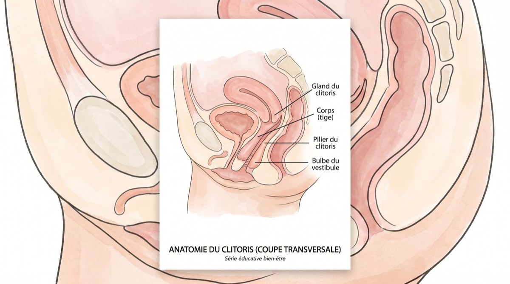
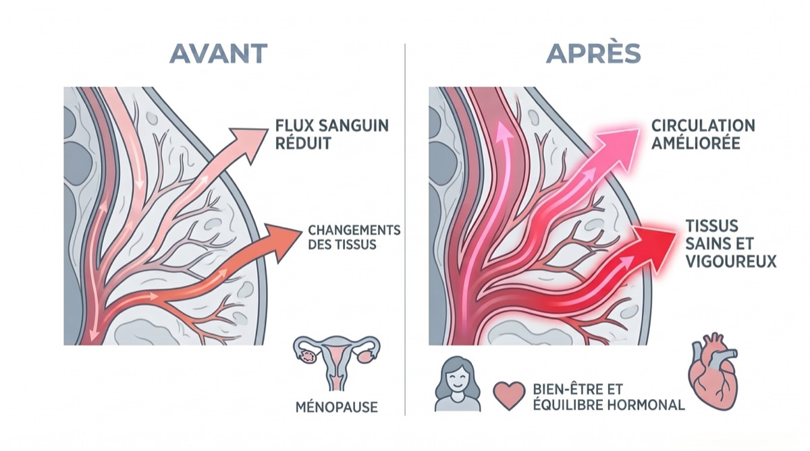

Pourquoi nous en parlons
Quand notre rédaction a entendu parler pour la première fois de cet « appareil de bien-être en forme de citron » qui faisait fureur dans la communauté ménopause, nous étions sceptiques, autant l'avouer. Mais après avoir interrogé des dizaines de femmes, consulté des gynécologues et, oui, l'avoir essayé nous-mêmes, nous comprenons l'engouement.
Ce n'est pas une énième tendance bien-être. Le Lem répond à un vrai problème médical, qui touche des millions de femmes mais dont on parle rarement : l'atrophie clitoridienne et la perte de bien-être sexuel à la ménopause.
Ce dont personne ne nous avait prévenues
On nous parle de tout : des bouffées de chaleur qui nous laissent en nage entre nos draps à 3 h du matin, du brouillard mental qui nous fait chercher nos lunettes alors qu'on les a sur le nez.
Mais personne ne s'assoit avec vous, un verre de pinot à la main, pour vous glisser : « Au fait, si tu ne gardes pas les choses actives là en bas, ton clitoris peut littéralement rétrécir. »
Cela porte un nom : l'atrophie clitoridienne. Elle fait partie du syndrome génito-urinaire de la ménopause (SGUM), un trouble qui touche jusqu'à 50 % des femmes ménopausées, selon la North American Menopause Society.
« La grande déconnexion »
Pour beaucoup des femmes que nous avons interrogées, le problème n'était pas seulement la sécheresse. C'était l'engourdissement. Une testeuse a raconté avoir ressorti le vieux vibromasseur de ses 30 ans : « Au lieu de faire du bien, c'était juste… irritant. Ou alors je ne sentais rien. Comme essayer de chatouiller une corne sous le pied. »
Les médecins l'expliquent : le vibromasseur classique agit par friction et par à-coups. Quand les tissus s'amincissent à cause de la chute des œstrogènes, la vibration directe peut au contraire désensibiliser encore plus les terminaisons nerveuses, d'où cette sensation d'« engourdissement ».
« Arrêtez de vibrer. Passez à la succion. »
Les spécialistes du plancher pelvien
Les gynécologues spécialistes de la ménopause l'expliquent : « Quand les œstrogènes chutent, l'afflux sanguin vers la zone pelvienne diminue. Les tissus s'amincissent, perdent en élasticité et en sensibilité. On parle du principe du tout ou rien : sans un afflux de sang régulier, impossible de garder ces tissus en bonne santé. »
Et voici le Lem de Hello Nancy
C'est là qu'entre en scène ce petit appareil jaune. Le Lem n'est pas présenté comme un sextoy, mais comme un appareil de bien-être. Et après nos recherches, on comprend pourquoi.
Contrairement au vibromasseur classique, qui repose sur la friction (de quoi irriter des tissus déjà fragilisés par la ménopause), le Lem mise sur la technologie à air pulsé. Imaginez la différence entre du papier de verre passé sur la peau et un massage tout en douceur par succion.
La science : pourquoi l'air pulsé fonctionne
❌ Le vibromasseur classique :
Il agit par friction en surface, ce qui peut irriter des tissus sensibles et amincis, et provoquer engourdissement ou microlésions.
✓ La technologie à air pulsé :
Elle crée de douces ondes de succion sans contact direct. Elle attire dans les tissus un sang riche en oxygène, pour préserver leur santé et raviver les sensations.
Concrètement : le Lem forme un léger joint autour du clitoris et le stimule par ondes de pression d'air, imitant la sensation du sexe oral, mais sans relâche et toujours à la même intensité. Aucun frottement, donc aucune irritation.
Mais toute la magie tient à la physique : cette douce succion crée un effet de vide qui attire en profondeur un sang riche en oxygène jusque dans les tissus. De quoi réveiller des terminaisons nerveuses endormies depuis des années.
« On a l'impression que ça aspire l'orgasme vers l'extérieur… et que les vagues de plaisir durent bien plus longtemps. »
Alisha, testeuse de la première heure (avis client vérifié)
Notre comparatif : où se situe le Lem
Nous avons comparé le Lem aux solutions classiques pour la santé des tissus à la ménopause.
| Critère | Le Lem | Vibromasseur classique | Crème aux œstrogènes |
|---|---|---|---|
| Adapté aux tissus sensibles | ✅ Oui | ❌ Risque d'irritation | ⚠️ Résultats lents |
| Stimule l'afflux sanguin | ✅ Jusqu'en profondeur | ⚠️ En surface seulement | ✅ Progressivement |
| Sans friction ni irritation | ✅ Sans contact | ❌ Provoque des frottements | ✅ Oui |
| Plaisir immédiat | ✅ Instantané | ⚠️ Variable | ❌ Aucun plaisir |
| Design discret | ✅ On dirait un citron | ❌ Sans équivoque | ✅ Oui |
| Recommandé par les médecins | ✅ Pour l'afflux sanguin | ⚠️ Parfois | ✅ Oui |
| Prix | 77,95 € (une seule fois) | 50 à 150 € | 30 à 50 €/mois |
Un design pensé pour en finir avec la gêne
Une chose nous a frappées pendant les tests : la discrétion du Lem est voulue. Jaune vif, il tient dans la paume de la main et ressemble vraiment à un citron décoratif.
Le « test de la table de chevet »

Nous avons toutes ce tiroir. Le tiroir de la honte. Celui où l'on planque, sous de vieilles chaussettes, ces appareils en plastique phalliques et peu ragoûtants.
L'une de nos testeuses nous a raconté : « J'avais oublié mon Lem sur le plan de la salle de bains le jour où ma belle-mère est passée. Elle l'a pris dans la main et m'a dit : “Oh, c'est un de ces nouveaux appareils soniques pour le visage ? Comme c'est doux !” »
Il passe le test de la table de chevet haut la main. Il a tout d'un appareil de soin haut de gamme, rien d'un sextoy. Parce que c'est précisément ce qu'il est.
⚠️ Attention aux contrefaçons bon marché
Après la publication de notre premier test, des lectrices nous ont demandé pourquoi ne pas se rabattre sur la version à 20 € qu'on trouve sur Amazon. Voici la réponse des médecins.
« Les jouets bas de gamme sont faits de matériaux poreux, en gel ou en TPE », prévient-elle. « Des bactéries microscopiques se logent dans les pores : un vrai danger pour les femmes ménopausées, déjà sujettes aux infections urinaires. »
Le Lem de Hello Nancy est en silicone 100 % de qualité médicale, non poreux. Ne jouez pas avec votre santé pour économiser 20 €.
Discret comme un murmure
Un moteur ultra-silencieux pour une discrétion totale
Étanche (IPX7)
Parfait pour le bain ou la douche
Silicone de qualité médicale
Sans danger pour le corps, non poreux, facile à nettoyer
Charge magnétique
120 minutes d'autonomie par charge
La galerie produit
Le déballage : la première impression compte

La première chose qui a marqué nos testeuses ? L'emballage est élégant. Pas de couleurs criardes, pas d'images gênantes. Une boîte d'un blanc épuré, rehaussée de discrètes touches dorées, qu'on confondrait sans peine avec un soin de luxe.
Ce que contient la boîte :
- Le Lem (jaune vif, tient dans la paume)
- Un câble de charge USB magnétique
- Une pochette de rangement en velours tout doux (idéale en voyage)
- Un « guide du plaisir solo » rempli de conseils d'utilisation et de bien-être
- Un guide de prise en main, avec instructions illustrées
« En ouvrant la boîte, j'ai vraiment été surprise par la qualité haut de gamme de l'ensemble. On était loin du sextoy : on aurait dit un vrai investissement bien-être. » Testeuse, 54 ans
Parlons anatomie : pourquoi la stimulation clitoridienne compte

La science du plaisir
Ce que chaque femme devrait savoir sur son corps
Voilà ce qu'on n'apprend pas en cours de SVT : le clitoris compte environ 8 000 terminaisons nerveuses, plus que toute autre partie du corps humain, masculin ou féminin. À titre de comparaison, le pénis en compte environ 4 000.
Mais voici le hic : 75 % des femmes n'atteignent pas l'orgasme par la seule pénétration, selon une étude parue dans le Journal of Sex & Marital Therapy. Le clitoris, voilà la clé.
Ce qui se passe à la ménopause :

❌ Le problème :
- • Le taux d'œstrogènes chute de 90 %
- • L'afflux sanguin vers la zone pelvienne diminue
- • Le tissu clitoridien peut rétrécir de 20 à 30 %
- • La sensibilité nerveuse baisse
- • La lubrification naturelle se raréfie
✓ La solution :
- • Une stimulation régulière entretient l'afflux sanguin
- • Elle garde les circuits nerveux actifs
- • Elle prévient l'atrophie des tissus
- • Elle préserve la sensibilité
- • Elle favorise la lubrification naturelle
Les gynécologues le disent sans détour : « Voyez ça comme de la gym pour votre plancher pelvien. Si vous ne faites pas travailler ces muscles et que l'afflux sanguin se tarit, ils s'atrophient. C'est exactement la même chose pour le tissu clitoridien. »
💡 En résumé :
La stimulation clitoridienne régulière, ce n'est pas qu'une histoire de plaisir (même si c'est un agréable bonus). C'est aussi entretenir la santé des tissus, préserver la fonction nerveuse et éviter les dégâts irréversibles que laisse le manque d'attention. Bref, de la prévention.
« Et mon partenaire dans tout ça ? » Nous avons aussi posé la question
Le « miracle des 3 minutes » (et pourquoi les partenaires adorent)
Soyons honnêtes : pour beaucoup de femmes de plus de 50 ans, il faut parfois plus de 20 minutes (et pas mal de concentration) pour approcher de l'orgasme. Avec le Lem ? Trois minutes.
La crainte qui revient le plus souvent : « Est-ce que mon partenaire va se sentir remplacé ? »
Absolument pas. Le Lem est minuscule. De nombreux couples l'utilisent pendant les rapports. Il joue le rôle de « tremplin » : il vous assure d'être pleinement excitée et naturellement lubrifiée, et soulage votre partenaire de toute pression de « performance ».
Une testeuse nous a confié : « Notre chambre est passée d'un lieu d'angoisse à un véritable terrain de jeu. »
L'une des questions qui revenaient le plus souvent au fil de nos recherches : « Est-ce que mon partenaire va se sentir menacé ? »
Voici ce que nous avons constaté : le Lem ne remplace rien, il enrichit. De nombreux couples interrogés nous ont raconté qu'inviter le Lem dans leur intimité avait en réalité renforcé leur complicité.
« Mon mari était curieux, pas menacé. Aujourd'hui, c'est lui qui l'utilise sur moi pendant les préliminaires. Ça lui retire toute la pression de la “performance”, et moi, j'ai exactement ce dont j'ai besoin. On y gagne tous les deux. »
Valeria, 55 ans, mariée depuis 28 ans
Grâce à sa taille compacte, il se glisse facilement dans les ébats sans jamais gêner. Et comme il reste en place tout seul, mains libres, les deux partenaires peuvent se concentrer l'un sur l'autre.
Comment les couples utilisent le Lem :
Pendant les préliminaires
Le partenaire le maintient en place au fil des baisers et des caresses
Pendant les rapports
Bien placé, pour une stimulation à la fois clitoridienne et pénétrative
En solo, sous le regard du partenaire
De quoi renforcer la complicité et l'aider à comprendre ce qui vous fait du bien
« Entretien » entre deux fois
En solo, il garde les tissus en bonne santé quand les rapports à deux se font rares
Le bon réflexe : tout est dans le dialogue. Présentez-le comme un outil de bien-être qui profite à vous deux, en allégeant la pression et en décuplant le plaisir.
Toutes les raisons d'essayer, aucune de s'inquiéter
Nous avons passé au crible les garanties de Hello Nancy. Voici ce qu'elles veulent vraiment dire.
Satisfaite ou remboursée sous 30 jours
Pas convaincue ? Vous êtes intégralement remboursée, sans même avoir à renvoyer l'appareil. La marque vous fait confiance : difficile d'être plus sûr de son produit.
En clair : aucun risque financier. Essayez-le un mois.
Garantie de 12 mois
Le moindre souci avec l'appareil pendant la première année ? La marque le remplace. Gratuitement. Sans poser de questions.
En clair : ce n'est pas un gadget jetable. C'est fait pour durer.
Une assistance à vie
Une question sur l'utilisation ? Un doute sur le nettoyage ? Le service client répond en moins de 24 heures.
En clair : vous n'achetez pas un produit, vous rejoignez une communauté.
La vraie question : qu'avez-vous à perdre ?
Nous avons passé en revue la science. Nous vous avons montré les avis. Nous avons décrypté les garanties. À ce stade, le seul vrai risque, c'est de ne pas l'essayer.
Faisons le calcul :
Si vous l'essayez :
- ✓ Vous pourriez redécouvrir un plaisir que vous croyiez perdu
- ✓ Vous pourriez préserver la santé des tissus et prévenir l'atrophie
- ✓ Vous pourriez mieux dormir (l'orgasme libère de l'ocytocine)
- ✓ Au pire : vous récupérez vos 77,95 €
Si vous laissez passer :
- • L'atrophie des tissus se poursuit
- • La sensibilité nerveuse continue de baisser
- • Le bien-être sexuel reste un combat
- • Vous vous demanderez toujours « et si ? »
Pourquoi nous faisons confiance à Hello Nancy
Nous ne recommandons pas un produit à la légère. Voici pourquoi Hello Nancy a passé nos exigences éditoriales.
Primé
Prix 2025 de la technologie bien-être féminin, décerné par l'Institut international du bien-être
Avis vérifiés
4,7★ de moyenne sur 14 907 acheteuses vérifiées (aucun faux avis)
Plus d'1M vendus
Plus de 1 000 000 d'exemplaires écoulés dans le monde depuis son lancement en 2023
Qualité médicale
Silicone de qualité médicale, soumis à des tests de sécurité rigoureux